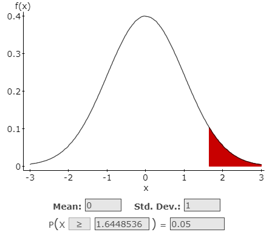
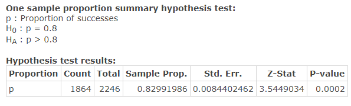
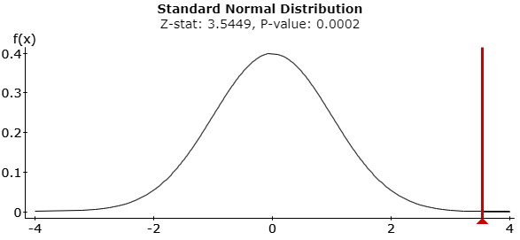
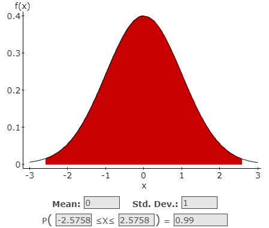
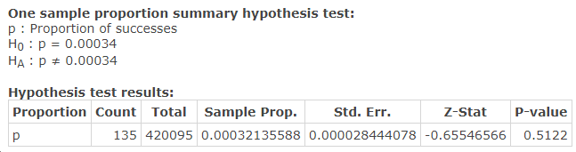
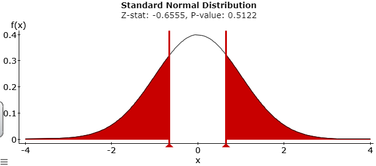

Unit 4 Hypothesis Testing
7.4 Hypothesis Testing for Proportions
Requirements for Testing Claims about a Population Proportion p
- The sample observations are a simple random sample.
- The conditions for a binomial distribution are satisfied.
- The conditions \(n p \geq 5\) and \(n q \geq 5\) are both satisfied, so the binomial distribution of sample proportions can be approximated by a normal distribution with \(\mu=n p\) and \(\sigma=\sqrt{n p q}\). (Note: \(p\) is the assumed proportion not the sample proportion.)
Calculate the Test Statistic for a Claim about the Proportion
- Test Statistic for Proportion Claim:
- n = sample size
- p = population proportion q = 1 – p
- \(\hat{p}=\frac{x}{n}=\) sample proportion
- \(z=\frac{\hat{p}-p}{\sqrt{\frac{p q}{n}}}\)
- Use P-value to Evaluate the Null Hypothesis:
(Will use NORMAL Calculator to get Critical Values)
- Definition of P-value: The probability of being as extreme, or more extreme, than your data, assuming is correct.
- Making a decision about the null hypothesis based on the P-value
- If P-value \(\leq \alpha\), (Or TS is in the rejection area) reject \(H_0\) .
- If P-value \(> \alpha\), (Or TS is NOT in the rejection area) fail to reject \(H_0\) .
- Formulate a Conclusion About the Claim
Use your decision about the null to make a statement about the claim:
\(H_0\) is the claim \(H_A\) is the claim Reject \(H_0\) “There is sufficien sample evidence to reject the claim that…” “There is sufficient sample evidence to support the claim that…” Fail to reject \(H_0\) “There is not sufficient sample evidence to reject the claim that…” “There is not sufficient sample evidence to support the claim that…”
Problems
- Driving and Texting: In a survey, 1864 out of 2246 randomly selected adults in the U.S. said that texting while driving should be illegal (based on data from Zogby International). Consider a hypothesis test that uses a 0.05 significance level to test the claim that more than 80% of adults believe that texting while driving should be illegal.
Sample proportion: \(\hat{p}=\frac{1864}{2246}=.8299\)
- Design the Study
- The original Claim:
\(p>0.8\) - \(H_0\):
\(p \leq 0.8\) assume \(H_0\):\(p = 0.8\) - \(H_A\):
\(p > 0.8\) - Type of Test:
Right-tailed test - Level of Significance:
\(\alpha =.05\) - Critical Value(s):
\(z=1.645\) (Determines shaded area(s))
=1.6448536)=.05">
- The original Claim:
- Results
- Test Statistic: A standardized value based on the sample data, assuming the null is true.
\(z=\frac{\hat{p}-p}{\sqrt{\frac{p q}{n}}} \quad=\frac{8299-.8}{\sqrt{\frac{(.8)(.2)}{2246}}}=3.5426\)
\(z=3.5449 \quad \text{from StatCrunch}\)
- p-value:
0.0002 - Rejection Criteria: Reject \(H_0\) if
p value \(< \alpha\) and the test statistic (z) is in the rejection region. - Decision about the null:
Reject \(H_0\) Reason 1: 0.0002 < .05
Reason 2: 3.5426 is in the rejection region
- Concluding statement about the claim:
There is sufficient evidence to support the claim more than 80% of adults believe texting while driving should be illegal.
0.8. Hypothesis Test results: Proportion: p Count: 1864 Total: 2246 Sample Prop.: 0.82991986 Std. Err.: 0.0084402462 z-Stat: 3.5449034 p-value: 0.0002">

- Test Statistic: A standardized value based on the sample data, assuming the null is true.
- Design the Study
- Cell phone and Cancer: In a study of 420,095 Danish cell phone users, 135 subjects developed cancer of the brain or nervous system (based on data from the Journal of the National Cancer Institute as reported in USA Today). Test the claim of a once popular belief that such cancers are affected by cell phone use. That is, test the claim that cell phone users develop cancer of the brain or nervous system at a rate that is different from the rate of 0.0340% for people who do not use cell phones. Because this issue has such great importance, use a 0.01 significance level.
Sample proportion: \(\hat{p}=\frac{135}{420095} \approx 0.000321\)
- Design the Study
- The original Claim:
\(p \neq 0.00034\) - \(H_0\):
\(p = 0.00034\) < assume \(H_0\):\(p = 0.00034\) - \(H_A\):
\(p \neq 0.00034\) - Type of Test:
Two-tailed test - Level of Significance:
\(\alpha =.01\) - Critical Value(s):
\(z=\pm 2.576\) (Determines shaded area(s))

- The original Claim:
- Results
- Test Statistic: A standardized value based on the sample data, assuming the null is true.
\(z=\frac{\hat{p}-p}{\sqrt{\frac{p q}{n}}}=\frac{.000321-.00034}{\sqrt{\frac{(.00034)(.99966)}{420095}}}=0.6680\)
\(z=-0.6555 \quad \text{from StatCrunch}\)
- p-value:
0.5122 - Rejection Criteria: Reject \(H_0\) if
p value \(< \alpha\) and the test statistic (z) is in the rejection region. - Decision about the null:
Fail to reject \(H_0\) Reason 1: 0.5122 > .01
Reason 2: -0.6680 (StatCrunch -0.6555) is not in the rejection region
- Concluding statement about the claim:
There is not sufficient evidence to support the claim phone users develop cancer at a rate different than .00034 which is the rate for non cell phone users.


- Test Statistic: A standardized value based on the sample data, assuming the null is true.
- Design the Study
- Flu: In a clinical trial, 28 out of 800 patients taking a prescription drug complained of flulike symptoms. Suppose that it is known that 2.2% of patients taking competing drugs complain of flulike symptoms. Test the claim that more than 2.2% of this drug’s users experience flulike symptoms as a side effect at the 0.1 significance level.
- Design the Study
- The original Claim:
\(p > 0.022\) - \(H_0\):
\(p \leq 0.022\) < assume \(H_0\):\(p = 0.022\) - \(H_A\):
\(p > 0.022\) - Type of Test:
Right-tailed test - Level of Significance:
\(\alpha =0.01\) - Critical Value(s):
\(z=1.282\) (Determines shaded area(s))

- The original Claim:
- Results
- Test Statistic: A standardized value based on the sample data, assuming the null is true.
\(z=\frac{\hat{p}-p}{\sqrt{\frac{p q}{n}}} = \frac{.035-.022}{\sqrt{\frac{(.022)(.978)}{800}}}=2.5067\)
- p-value:
0.0061 - Rejection Criteria: Reject \(H_0\) if
p value \(< \alpha\) and the test statistic (z) is in the rejection region. - Decision about the null:
Reject \(H_0\) Reason 1: 0.0061 < .01
Reason 2: 2.5067 is in the rejection region
- Concluding statement about the claim:
There is sufficient evidence to support the claim more than 2.2% of the drug’s users experience flu like symptoms.


- Test Statistic: A standardized value based on the sample data, assuming the null is true.
- Design the Study